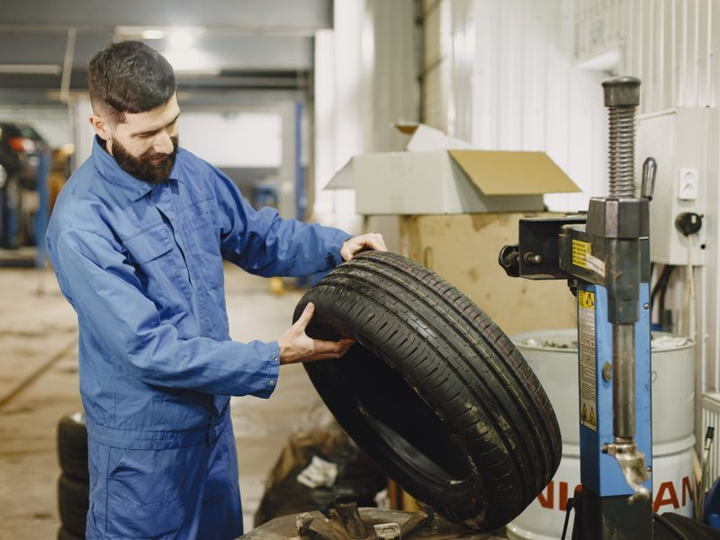
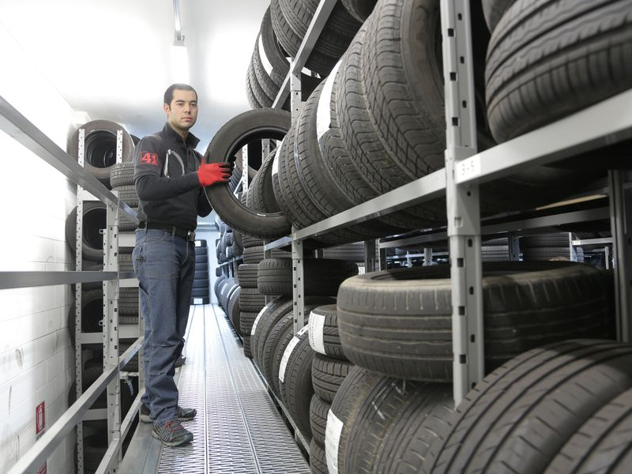
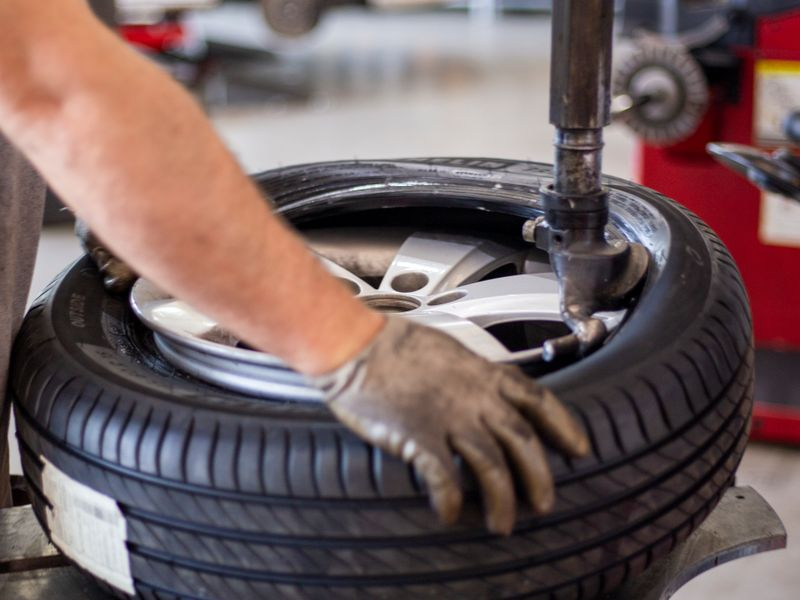
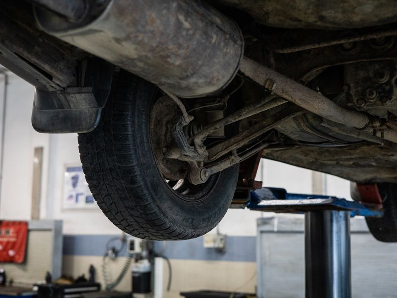
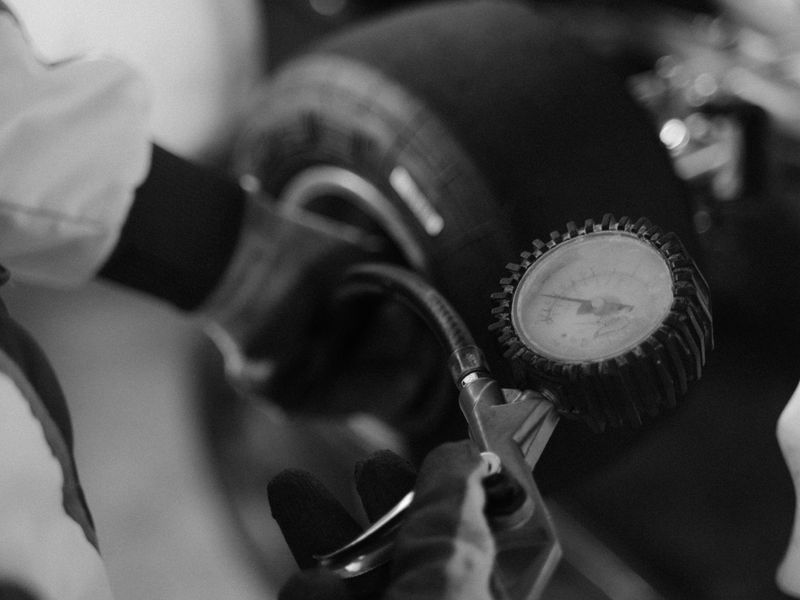
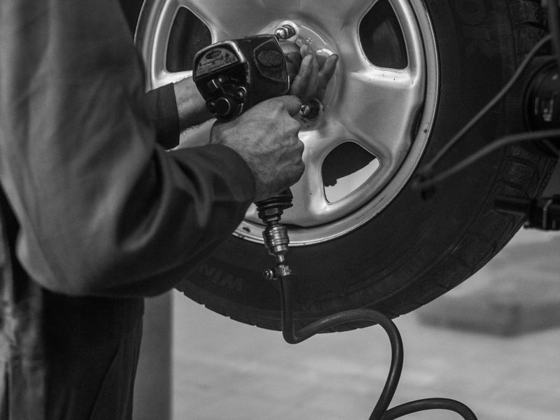
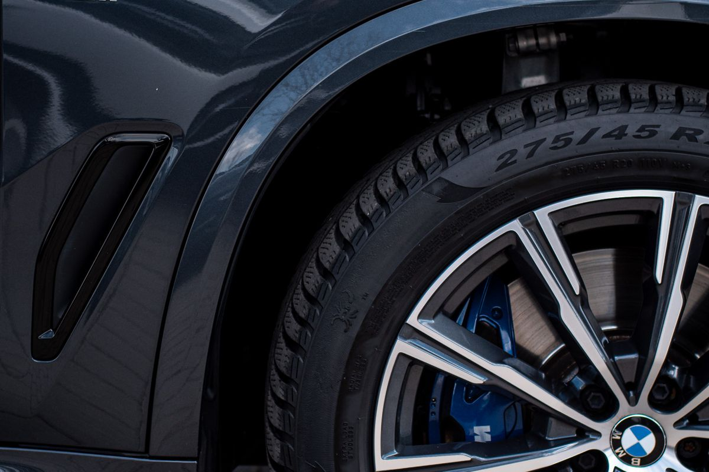

24/7
Cambio de goma
Llegas con la goma ponchada y salimos con la llanta nueva puesta. Cambio completo en minutos, sin filas.
Emergencias de gomas · 24/7 en Santo Domingo
Cambio de goma, parcheo, llantas nuevas y usadas, rotación, balanceo y alineación. Sin cita, sin esperas largas. Llegas y en minutos sigues en la carretera.
Trabajamos a la vista, con herramientas profesionales y llantas de marcas de confianza. Usted mira, nosotros resolvemos.
Llegas con la goma ponchada y salimos con la llanta nueva puesta. Cambio completo en minutos, sin filas.

RápidoRevisión, desarme, parcheo y prueba de presión al momento. Si tu goma tiene arreglo, la dejamos como nueva.

StockAmplio inventario de medidas populares. Te asesoramos gratis para elegir la mejor según tu carro y tu presupuesto.

ExpresProlonga la vida de tus gomas y evita vibraciones. Rotación, balanceo y apriete calibrado con equipo profesional.

PrecisiónTu carro jalando para un lado o gastando goma de más: alineación rápida para que las llantas duren y el volante quede firme.

GratisChequeo y llenado de presión en todas las gomas, incluyendo la de repuesto. Prevención gratis que evita sustos.

En minutosNada de dejar el carro todo el día. Nuestros técnicos trabajan frente a ti y en promedio tienes tu goma lista en 15 minutos.
¿No sabes qué necesita tu goma? Mándanos la foto por WhatsApp y te decimos al momento.
Enviar foto por WhatsApp →No somos una gomera más. Somos el taller al que los conductores llaman primero porque respondemos cuando más lo necesitas.

Ponché de madrugada en la Kennedy y pensé que esperaría horas. En 20 minutos tenía mi goma lista y me dieron hasta café. De verdad que te resuelven ya.
Cambié mis 4 gomas y me asesoraron sin venderme de más. Me explicaron la diferencia de precios y hasta me salvaron con la alineación que otra gomera no había visto.
Como taxista no puedo perder el día esperando gomas. Ellos trabajan a la vista, rápido y sin cobrar de más. Es mi taller fijo desde hace años.